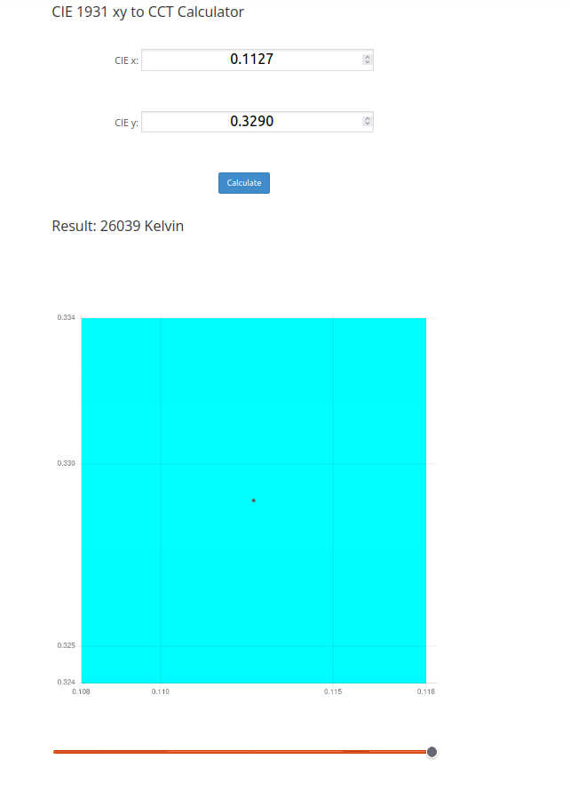

TCS34725CS SENSOR
 This section provides a detailed explanation of the embedded system aspect of our project, focusing specifically on the Grove The TCS34725CS color sensor.
This section provides a detailed explanation of the embedded system aspect of our project, focusing specifically on the Grove The TCS34725CS color sensor.
Hardware Components
Microcontroller Development Kit
We utilize an STM32 microcontroller development kit to build and debug code for the card. This development kit, provided by the ENIB internal pack we use in our course (SDK pack), allows us to efficiently develop and debug firmware for the embedded system.
Software Implementation
Before we can utilize the TCS34725CS sensor, it's crucial to establish communication with it using the I2C protocol and configure it with the appropriate settings. To achieve this, we need to implement basic functions that facilitate communication with the sensor. These functions serve as the foundation for all subsequent interactions with the sensor.
Project Structure
To integrate the TCS34725CS sensor into our project, follow these steps:
- Create the necessary files:
TCS34725CS.h: Header file for the TCS34725CS sensor interface.TCS34725CS.c: Source file for the TCS34725CS sensor implementation.
Essential Functions for Sensor Communication
To interact with the TCS34725CS sensor, we implement the following fundamental functions in addition to the basic functions previously discussed for the SHT40 sensor. One of these functions allows us to get a 16-bit value from the sensor:
uint16_t read16(uint8_t reg) {
uint16_t x;
uint8_t reg_data[1] = { TCS34725_COMMAND_BIT | reg };
if (i2c_write(I2C1, TCS34725_ADDRESS, reg_data, 1) != I2C_OK) {
uart_puts(_USART2, "\n\rErreur lors de l'écriture dans le registre\n");
return 0;
}
uint8_t data[2];
if (i2c_read(I2C1, TCS34725_ADDRESS, data, 2) != I2C_OK) {
uart_puts(_USART2, "\n\rErreur lors de la lecture d'octets\n");
return 0;
}
x = data[1];
x <<= 8;
x |= data[0];
return x;
}
Command Bit
The TCS34725_COMMAND_BIT is defined as 0x80. This bit is used to indicate that the following byte is a command for the TCS34725CS sensor. When interacting with the sensor, this bit is OR-ed with the register address to form the command byte.
Sensor Initialization
To use the TCS34725CS sensor, we need to initialize the I2C communication and configure the sensor. For initialization, we first read the serial number to ensure that the sensor is connected and functioning properly. The process involves detecting if a sensor is connected by reading out the ID register. If the sensor does not answer or if the answer is not the expected value, the test fails.
void tcs34725_init(void) {
// Initialize I2C communication on I2C1
// Check if the initialization was successful
if (i2c_master_init(I2C1) != I2C_OK) {
// If I2C initialization fails, print an error message to the UART
uart_puts(_USART2, "\n\rErreur: Communication I2C non initialisée\n");
return;
}
// Read the ID register of the TCS34725 sensor
uint8_t id = read8(TCS34725_ID);
// Check if the ID matches the expected values (0x44 or 0x10)
if ((id != 0x44) && (id != 0x10)) {
// If the ID does not match, print an error message to the UART
uart_puts(_USART2, "\n\rErreur: ID Incorrect\n");
return;
}
// Define the configuration for the TCS34725 sensor
tcs34725_config_t config = {
.enable = TCS34725_ENABLE_PON | TCS34725_ENABLE_AEN, // Enable the power-on and ADC
.integration_time = TCS34725_INTEGRATIONTIME_700MS, // Set the integration time to 700ms
.gain = TCS34725_GAIN_1X // Set the gain to 1x
};
// Write the configuration settings to the sensor
write8(TCS34725_ENABLE, config.enable); // Enable the sensor
write8(TCS34725_ATIME, config.integration_time); // Set the integration time
write8(TCS34725_CONTROL, config.gain); // Set the gain
return;
}
Task One
Reading RGB and Clear Values
After the initialization is complete, we need to develop a function to retrieve the RGB and clear values from the sensor. Here is the function to do this:
/**
* @brief Reads the RGB and clear values from the TCS34725 sensor.
*
* This function reads the clear, red, green, and blue data from their respective
* data registers. It also waits for the appropriate integration time to ensure
* the data is ready before reading.
*
* @param red Pointer to store the red value.
* @param green Pointer to store the green value.
* @param blue Pointer to store the blue value.
* @param clear Pointer to store the clear value.
*/
void tcs34725_read_color(uint16_t *red, uint16_t *green, uint16_t *blue, uint16_t *clear) {
// Read the clear, red, green, and blue data from their respective data registers
*clear = read16(TCS34725_CDATAL);
*red = read16(TCS34725_RDATAL);
*green = read16(TCS34725_GDATAL);
*blue = read16(TCS34725_BDATAL);
// Read the integration time register
uint8_t atime_reg = read8(TCS34725_ATIME);
// Calculate the integration time in milliseconds
uint16_t integration_time = (256 - atime_reg) * 2.4;
// Wait for the integration time to ensure data is ready
// Note: The delay_us function is assumed to be available for microsecond delays
switch (integration_time) {
case 2: // 2.4 ms
delay_us(3000); // Delay for 3 ms to ensure data is ready
break;
case 24: // 24 ms
delay_us(24000); // Delay for 24 ms to ensure data is ready
break;
case 50: // 50 ms
delay_us(50000); // Delay for 50 ms to ensure data is ready
break;
case 101: // 101 ms
delay_us(101000); // Delay for 101 ms to ensure data is ready
break;
case 154: // 154 ms
delay_us(154000); // Delay for 154 ms to ensure data is ready
break;
case 700: // 700 ms
delay_us(700000); // Delay for 700 ms to ensure data is ready
break;
default:
// If the integration time does not match any of the cases, no delay is needed
break;
}
}
The switch-case statement uses the calculated integration time to delay the appropriate amount of time to ensure the data is ready. The delay_us function is assumed to be available to create delays in microseconds. The delay times are adjusted slightly to ensure proper timing.
Calculating Color Temperature
After obtaining the RGB values, we can calculate the color temperature using the following function This function uses the RGB values to calculate the CIE 1931 XYZ color space values,and then computes the correlated color temperature (CCT) using the CIE 1931 xy chromaticity coordinates.
/**
* @brief Calculates the color temperature from the RGB values.
* @param r Red value.
* @param g Green value.
* @param b Blue value.
* @param x Pointer to store the x chromaticity coordinate.
* @param y Pointer to store the y chromaticity coordinate.
* @return The calculated color temperature in Kelvin.
*/
float calculateColorTemperature(uint16_t r, uint16_t g, uint16_t b, float *x, float *y) {
float X, Y, Z;
float XYZ_sum;
// Convert RGB values to CIE 1931 XYZ color space(The RGB values are converted to the CIE 1931 XYZ color space using the following equations)
X = (-0.14282f * r + 1.54924f * g - 0.95641f * b);
Y = (-0.32466f * r + 1.57837f * g - 0.73191f * b);
Z = (-0.68202f * r + 0.77073f * g + 0.56332f * b);
// Sum of XYZ components
XYZ_sum = X + Y + Z;
if (XYZ_sum != 0) {
// Calculate the x and y chromaticity coordinates
*x = X / XYZ_sum;
*y = Y / XYZ_sum;
} else {
// Default values if XYZ_sum is zero
*x = 0.3320f;
*y = 0.1858f;
}
// Calculate n value used in the CCT formula
float n = (*x - 0.3320f) / (0.1858f - *y);
// Calculate the correlated color temperature (CCT) using the CIE 1931 xy to CCT formula
// CCT = 437*n^3 + 3601*n^2 + 6861*n + 5517
float cct = ((437 * n * n * n) + (3601 * n * n) + (6861 * n) + 5517);
return cct;
}
For more information on the CIE 1931 xy to CCT formula, you can refer to this (link)
Calculating Illuminance (Lux)
After obtaining the RGB values, we can calculate the illuminance (lux) using the following function:
/**
* @brief Calculates the illuminance (lux) from the RGB values.
*
* This function uses the RGB values to calculate the illuminance in lux based on
* a weighted sum of the red, green, and blue components.
*
* @param r Red value.
* @param g Green value.
* @param b Blue value.
* @return The calculated illuminance in lux.
*/
float calculateLux(uint16_t r, uint16_t g, uint16_t b) {
float illuminance;
// Calculate illuminance using a weighted sum of the RGB values
// The weights are derived from the spectral sensitivity of the sensor
illuminance = (-0.32466f * r) + (1.57837f * g) + (-0.73191f * b);
// Return the calculated illuminance
return (uint16_t)illuminance;
}
By using this function, you can convert the RGB values obtained from the TCS34725 sensor into an illuminance value in lux, providing a measure of the light intensity. For more detailed information on how illuminance is calculated from RGB values and the spectral sensitivity of the sensor, you can refer to relevant technical documentation and research papers on color sensing and photometry.
Task Two
Testing Color and Illuminance Calculation
Great, now we can test if this works well. We need to use serial UART ST-LINK to display x, y, lux, and color temperature in Kelvin in the terminal. Here is a test where we define main.c.
case 'c': {// Get current color
uint16_t red, green, blue, clear, color_temp, lux;
float x, y;
tcs34725_read_color(&red, &green, &blue, &clear);
color_temp = calculateColorTemperature(red, green, blue, &x, &y);
lux = calculateLux(red, green, blue);
// Convertir les coordonnées chromatiques en parties entières et décimales
int x_int =(int)x;
float x_frac = x-x_int;
int x_frac_int = (int)(x_frac * 1000);
int y_int = (int)y;
float y_frac = y-y_int;
int y_frac_int= (int)(y_frac*1000);
// Afficher (x,y) avec illuminance (color + brightness )
uart_printf(UART_TO_USE, "\r\nx = %d.%d , y=%d.%d, illuminance=%d\r\n", x_int, x_frac_int, y_int, y_frac_int,lux);
uart_printf(UART_TO_USE, "\r\nTemperature en Kelvin: %d\n", color_temp);
timer_start(_TIM2); // Sleep 1s
#endif
break;
}
Example Output
When the sensor detects color and calculates the values, the output in the terminal might look like this:
x = 0.332, y = 0.185, illuminance = 123
Temperature in Kelvin: 5500
Verification
We can verify if the x, y coordinates and the lux values are correct by using a CIE 1931 xy to CCT calculator. Here is an example showing the process: 
For more information on the CIE 1931 xy to CCT formula and how to use it, you can refer to this (link)
Summary
In this section, we include the essential details about the TCS34725CS sensor, its basic functionalities, and how to interface it with a microcontroller to read and display color temperature, chromaticity coordinates, and illuminance values using UART. We also provide a sample code implementation for initializing the sensor, reading data, and handling errors.